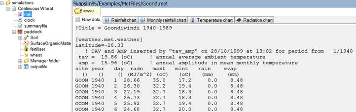
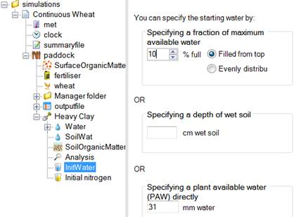
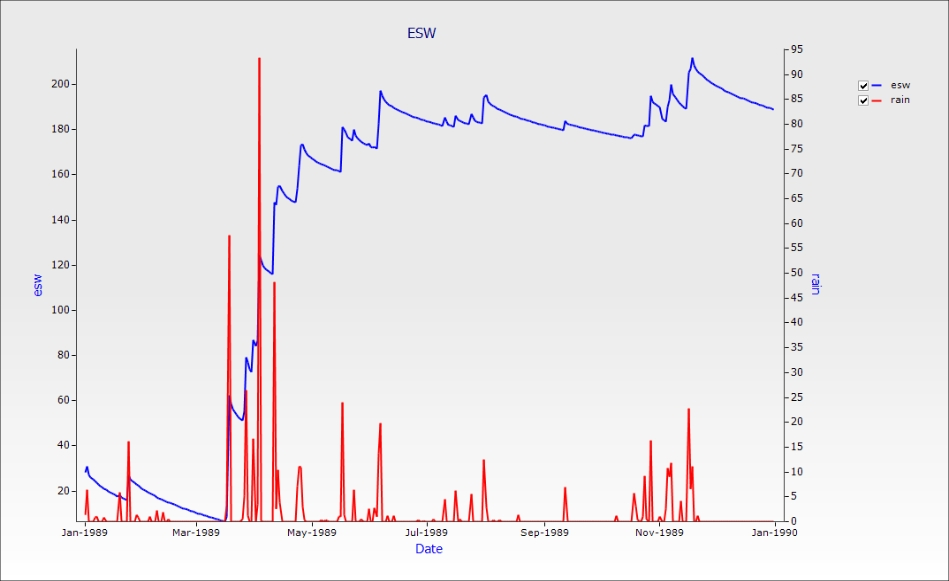

Welcome to the first training module for the Agricultural Production Systems Simulator (APSIM). This first module will introduce you to the Apsim User Interface (Apsim UI) and take you through the process of building, running and graphing a simulation.
The Main Toolbar

The primary buttons that you will be working with are highlighted above. They generally do what you would expect and will be examined in more detail below. The dimmed ones contain more advanced features that are not looked at in this module. Briefly, Export allows you to export a graph in a number of formats. Checkpoint creates a snapshot of a simulation allowing you to do before and after comparisons or to revert a change. Insert a new graph brings up the add new graph wizard. Excel allows you to export output files as comma delimited text files. Factorials are an advanced topic that will be looked at in a separate module. Run on cluster is for those people with access to the Toowoomba HPC cluster. Help directs you to the local help files; however there are a number of support options that are discussed in a separate module.
Exercise 1: Fallow Water Balance
We will create a simulation that examines the water balance over time in a fallow field in two locations with different soil types.
1. Press the new button to create a new simulation. You will be presented with the following screen:
Because all simulations generally share the same base components, we do not recommend starting from scratch. The best method is to choose the simulation closest to the one you want to build then modify it. For the purpose of this exercise we will use the Continuous Wheat simulation. Click “Continuous Wheat.apsim” then click Open.
2. Click Save. Save the file as Module1.apsim.
You will now see the new simulation loaded.
The Apsim UI consists of four panels; the main toolbar at the top, a simulation tree on the left that lists all the components in the loaded file, a module properties pane on the right and a bar at the bottom that lists available toolboxes.
The Toolbox
All available components in Apsim are included in toolboxes. Whenever you need to add a new component to your simulations you will find it in one of the toolboxes along the bottom of the screen. It is possible to add your own toolboxes; for instance, you might have a few components that you use often and want to make them easier to access. Maybe you’ve written some scripts that you would like to share with a colleague. Or perhaps you have customised some of the standard components and wish to reuse them. We are going to load a pre made toolbox to make it easier to access some soil data.
3. Click the options button. Click on “Add a toolbox”. Navigate to your APSIM installation folder (by default it will be in C:\Program Files (x86)\APSIM 7.5), then open the UserInterface\Toolboxes folder. Click Training.xml and click Open. You should now see the following (your path will be different):
Click OK and you will see the new toolbox in the toolbox bar at the bottom of the APSIM window.
You can add your own components by dragging and dropping from a simulation. You can also copy them directly from another toolbox.
Building a simulation
4. First we will make sure we’re using the right weather data. Click the met component in the simulation view. You should be able to see weather data for Goondiwindi loaded.

5. Next we’ll set the start and end dates for the simulation. In the clock component, set the start date to 1/1/1989 and the end date to 31/12/1989.
6. Now we’re going to change the soil. Click the Soils toolbox that you loaded earlier. Drag the Heavy Clay soil node from the toolbox and drop it on the paddock node in your simulation
7. Delete the old soil by clicking it and pressing delete. You can reorder components by right clicking and choosing Move Up/Down.
8. We need to set the starting water and nitrogen conditions for the soil. Expand the new soil node and click Init Water. Make sure “Filled from top” is selected and set the fraction available to 10%.

9. Click the Initial Nitrogen component and set the starting NO3 to 50 kg/ha and starting NH4 to 3 kg/ha. We’ll spread it evenly through the entire soil profile. First, we need to tell Apsim that we want to work in units of kg/ha, not ppm. You can change units by right clicking the column header. Change NO3 and NH4 to kg/ha then enter the values above.
10. We wanted the nitrogen spread evenly through the entire soil profile. To find out how deep the profile is, click the Water node under Soil.
We can see the soil profile is 180cm deep and is split into seven layers. Go back to the Initial nitrogen node and change Depth to read 0-180.
11. In the SurfaceOrganicMatter node, check that the “Organic Matter type” is wheat and the “Initial surface residue” is 1000 kg/ha. This means we start the simulation with 1000kg/ha of wheat stubble on the surface. This will decay over time putting nutrients back in the soil. It will also reduce surface evaporation.
12. Delete the Fertiliser, Wheat and Manager components as we do not need them for a fallow simulation. It should now look like this:
13. Rename the simulation. To do this, right click Continuous Wheat and choose “rename”. Type in “Clay Fallow”.
14. Results for the simulation are found in the “outputfile” node. This is also where you set what variables you want reported and how often. Click the “outputfile” node and delete all the default variables except the first one.
There are two ways to enter new variables. You can type them directly into the “Output file columns” list or select them (double click or drag) from the pane on the right. This pane shows all the available variables for the chosen component. You can change their order in the list by right clicking and choosing move up/down.
Enter the following variables to report:
|
Component
|
Variable name
|
Description
|
|
Clock
|
day
|
|
|
|
year
|
|
|
Met
|
rain
|
|
|
Soil (Heavy Clay)
|
esw
|
Extractable soil water (mm)
|
|
|
es
|
Evaporation
|
|
|
runoff
|
|
|
|
drain
|
Drainage
|
|
|
no3()
|
Summed over the profile.To sum over the soil profile put an opening and closing bracket () next to the name of the variable in the variables list.(click "?" button next to variable list for more info)
|
|
|
dlt_n_min()
|
summed over the profile - N mineralised
|
|
Surface organic matter
|
surfaceom_wt
|
Weight of all surface organic materials.
|
|
|
surfaceom_cover
|
Fraction of ground covered by all surface organic materials.
|
15. Click “Reporting Frequency” to specify how often you want the variables written to the output file. You can choose a regular interval such as every day or once a month/year, etc, or you specify an event. For instance you might want to output on sowing, harvesting or fertilising. You can have multiple events in an output file but this will result in duplicated writes if a day meets both criteria.
For this simulation we want to output daily so delete “harvesting” (there’s no crop to harvest so it would never write) and type in “end_day”.
16. We’ve finished building the simulation. Click the “Run” button on the main toolbar.
17. Once the run is complete, click the “outputfile” component to view the results. This is just a text file so you can easily import it into other programs for analysis. It will be saved in the same directory your simulation is in with the file name being <simulation_name>.out. If there is no file available it means the run failed. Check the “summaryfile” for errors.
Creating a Graph
Apsim has the ability to do basic visualisation and analysis right in the user interface. Let’s use the inbuilt APSIM graphs to display the output file in a graph.
We will create a graph of Date vs ESW and Rain(Right Hand Axis).
1. To do this Click on the Graph toolbox to open it.
2. Expand the Graph folder then the Graphs folder. (Click on the “+” symbol next to the Graphs folder to expand the node.)
3. Then drag in an XY component onto the output file in your simulation.
4. Expand the XY component.
5. Click on the Plot sub component.
6. Now in the Plot window click on the “X variables” square to make sure the background of the square is pink.
7. Now click on the “Date” column heading. It should appear in the list in the square.
8. Now click on the “Y variables” square to make its background pink.
9. Then click on the esw column heading, then the rain column heading. They should be added to the list in the square.
10. Now to make “rain” appear on the right hand axis, click rain in the square to highlight it, and then right click on it.
11. In the popup menu click on “Right Hand Axis”.
12. Now we want a nice clean line to be plotted with no points so now under “Point type” choose “None”.
13. Now just click on the top level XY component to view the graph. The graph should show the ESW (in mm) increasing with day of year. The sudden increases are due to rainfall events and the declines to evaporation and drainage loss. Daily rainfall will show this more clearly.

Try to create a graph of Date vs Runoff and Rain (right hand axis). Change the graph type to “dot line” and set the point type to “none. Tip: you can copy a graph by dragging it to the node where you want it to appear. Try copying your graph to the outputfile node and then edit the new one. To delete a variable, click it and press delete. It should look like this:
TIP: You can zoom in on a specific area by dragging a box down and to the right. To zoom back out simply drag in the opposite direction.
Comparing Simulations
Quite often you will want to examine differences between multiple simulations. Let’s examine the effect of runoff on the water balance of two different soil types. To do this, we’ll copy our simulation to create a new one exactly the same.
1. Drag the Clay Fallow node up to the top simulations node.
2. Rename this new simulation “Sand Fallow”
3. Drag the Sand soil from the Training toolbox onto the paddock under the new Sand Fallow simulation.
4. Delete the Heavy Clay soil. We do it in this order as other components that reference the soil would lose their link if there is no soil component. If this happens you’ll need to set them again.
5. Since we have a new soil we need to set initial Water and Nitrogen again. Change Water to 10% filled from top. NO3 to 50 kg/ha, NH4 to 3 kg/ha and depth to 0-180.
6. Run Apsim.
7. Graph both simulations together by dragging an XY graph onto the top ”simulations” node in the tree. Rename it to Runoff.
8. Create a graph of day vs. runoff(cumulative) and rain (right hand axis). To make runoff cumulative, use the same procedure as for right hand axis, only select “cumulative” from the pop-up menu. Set point type to “none”.